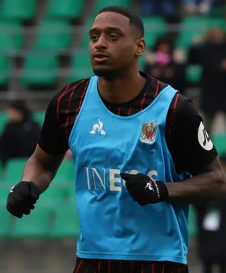

Ezzcoins › Player pages › Pablo Rosario (Team of the Week)

80
CDM

Rosario
PAC73
SHO66
PAS72
DRI77
DEF80
PHY84
Team of the Week
PlayStyles
✦Intercept✦Relentless✦BruiserTeam of the Week
Pablo Rosario
80 CDM · FC Porto · Liga Portugal · Dominican Republic
No console price yet. New cards are priced every half hour while FUTBIN can be reached.
84Meta rating · CB +4 vs overall · CDM 83 · CM 79
PAC73
SHO66
PAS72
DRI77
DEF80
PHY84
Chemistry style
Turn on JavaScript to see this card with each chemistry style.
- Card
- Team of the Week
- Added
- 23 Sep 2026
- Position
- CDM (also CB, CM)
- Club
- FC Porto
- League
- Liga Portugal
- Nation
- Dominican Republic
- Skill moves
- 3★
- Weak foot
- 3★
- PlayStyles+
- None
- PlayStyles
- Intercept, Relentless, Bruiser
- Base card
- 78 CDM
Meta rating: Ezzcoins' own estimate of how well this card plays in game, worked out from its stats for each position it can play, its skill moves, weak foot and PlayStyle+. An average card scores about its overall rating; higher means it plays above its rating.
Watch on Ezzcoins